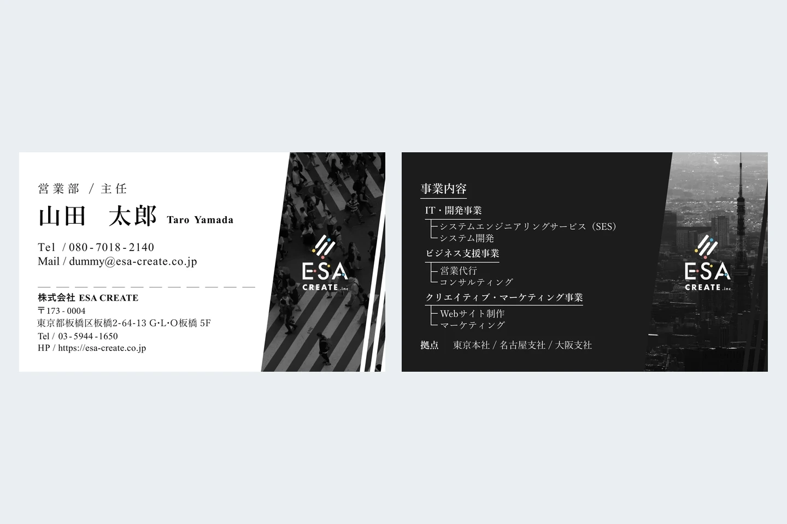
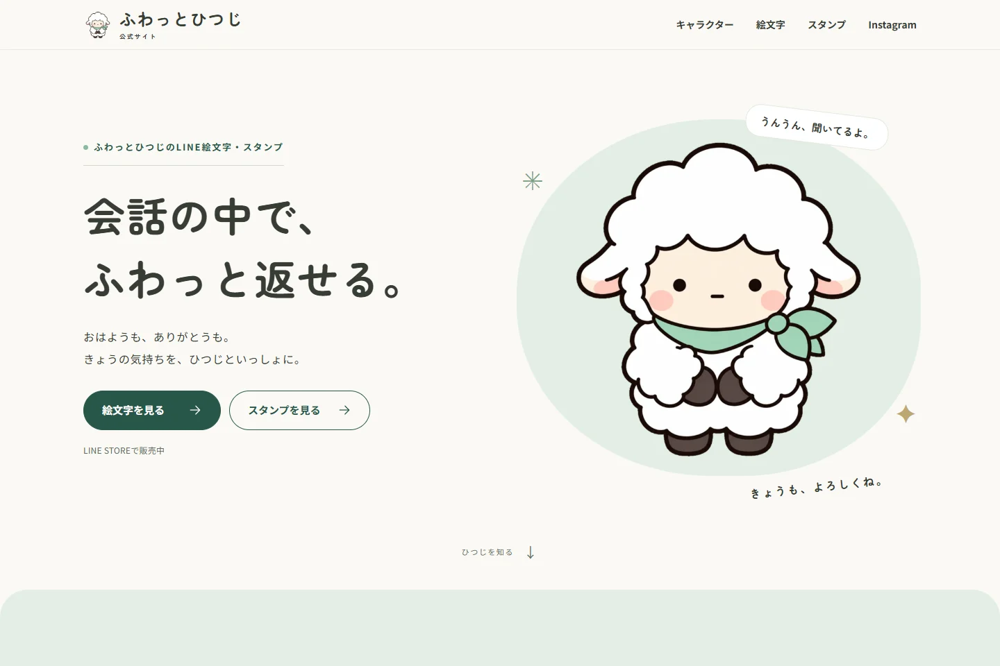

Webツール / AI活用
Aoi Tools
Web制作で感じた小さな不便をもとに、Webパーツ図鑑、Wireframe Maker、Responsive Preview Labを制作。ChatGPTやCodexを工程に取り入れ、要件整理からUI設計、実装、改善まで行いました。
- UI設計
- AI活用
- Webツール

YAMAGUCHI AOI
山口 碧
1996年生まれ。中京大学卒業後、ドラッグストアで店舗スタッフから店長まで経験しました。売場づくりを通して「伝え方」や「見せ方」が人の行動を変える面白さを知り、Webデザイナーへ転身しました。
現在はWebデザインを中心に、情報設計やUIデザインに取り組んでいます。必要に応じてHTML / CSSを中心とした実装にも対応します。現場で培った利用者視点を活かし、目的やターゲットに合わせて、読みやすく迷いにくいデザインを考えることを大切にしています。
Webデザイナーとして経験を積みながら、グラフィックにも取り組んでいます。ChatGPT、Codex、Gemini、Copilotは、要件整理・調査・実装支援・業務効率化など、目的に合わせて使い分けています。AIにデザインの判断を任せず、自分で方向性を決め、出力を確認しながら仕上げています。
Webツール / AI活用
Web制作で感じた小さな不便をもとに、Webパーツ図鑑、Wireframe Maker、Responsive Preview Labを制作。ChatGPTやCodexを工程に取り入れ、要件整理からUI設計、実装、改善まで行いました。

グラフィック / 名刺
実際の利用シーンを踏まえ、縦型の旧名刺から91×55mmの横型へリニューアル。3案からの検討と調整を経て、FigmaでのデザインからIllustratorでの印刷用データ作成まで担当しました。

Webサイト
自身が制作・展開するオリジナルの羊キャラクターの公式サイト。世界観の表現と、LINEスタンプ・絵文字やInstagramへの入口を設計。要件定義・情報設計からデザイン、実装、公開まで一貫して担当しました。

Webサイト
既存コーポレートサイトのデザインルールを引き継ぎながら、新たに追加するコンテンツエリアをFigmaでデザインしました。既存ページとの統一感を保ちながら、PC・スマートフォンそれぞれで情報が読みやすくなるレイアウトを設計しています。

POP作成
群馬県のフットサルチーム「デルミリオーレ群馬」の毎月の試合告知POPの作成。Photoshopを利用して提供素材の切り抜きや明るさ色味調整、Figmaでの配置調整、テキスト変更などを行い試合日時や会場などの情報を告知。


Webデザインを軸に、制作や業務の目的に応じてツールを使い分けています。AIは調査や整理、実装支援に活用し、方向性と仕上がりは自分で判断します。


WebサイトやLP、バナーなどのデザイン制作に使用しています。ワイヤーフレームからUIデザイン、プロトタイプまで作成し、実装時の再現性も意識して設計しています。
パーツやコンポーネントを整理しながら全体の統一感を保ち、ボタン配置、余白、文字サイズなど、視認性や操作性を考えたUIデザインを行っています。

Photoshopでは、写真の切り抜きや色味・明るさの調整など、Webサイトやグラフィック制作に必要な画像加工を行っています。
Illustratorでは図形や文字組みに加え、名刺などの印刷用データ作成にも使用しています。用途やターゲットに合わせて、配色・文字サイズ・余白を調整しながら制作しています。
制作の目的に応じて使い分け、出力の確認と最終判断は自分で行います。
要件・文章・構成の整理、アイデア出しや情報調査に活用。方向性を決めたうえで、考えを整理し制作を効率化する補助として使用します。
Web制作の実装・修正・検証を支援するツール。デザインの意図を整理し、コーディング、調査、テストの補助に使用します。
文章構成や情報収集・調査に使用。目的に応じてChatGPTと使い分け、複数の情報を確認・整理します。
業務でExcel Copilotを使い、集計表や手順を整理。再利用できるプロンプトと手順書を整え、他のメンバーも使える形にします。出力は目視でダブルチェックします。
HTML / CSSを中心に、既存サイトの更新やレスポンシブ対応、デザインカンプをもとにしたWeb実装に使用しています。JavaScriptは既存コードの読解やナビゲーションなどの軽微な修正を中心に使用しています。
個人制作のバージョン管理と公開に使用しています。GitHubで変更内容を管理し、Cloudflare WorkersなどでWebサイトやWebツールを公開しています。
既存Webサイトの更新・運用や、HTML / CSSを使った軽微な修正を経験しています。
業務でのデータ整理、集計表・管理表や資料の作成に使用しています。
DESIGN × AI
Webサイト・UI・グラフィックのデザインを中心に、ChatGPT、Codex、Gemini、Copilotを要件整理、調査、実装支援、定型作業の効率化に使っています。必要に応じてHTML / CSSを中心とした実装にも対応し、デザインの意図をWeb上で形にしています。
Webデザイン / UI・情報設計 / グラフィック
ChatGPT / Codex / Gemini / Copilot